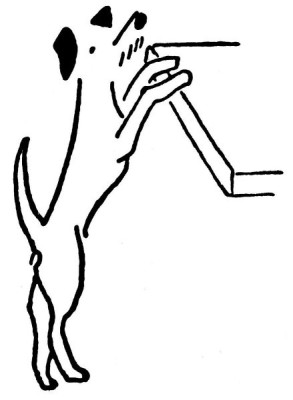

O psích zvycích
Co ti dnes, Dášeňko, povím, není žádná pohádka, ale pravda pravdoucí. Doufám, že chceš, aby z tebe byl vzdělaný pejsek, a že budeš dávat pozor.
Před mnoha sty a tisíci lety nežil ještě pes s člověkem. Tehdy totiž byl člověk ještě divoký a nedalo se s ním žít. A proto psi žili ve psích smečkách, ale ne v lesích jako srnky, nýbrž na velikánských loukách, které se jmenují prérie čili stepi. Proto má každý pes podnes tak rád louky a běhá po nich, až se mu uši třepou.
Víš-li pak, Dášeňko, proč vlastně se každý pes třikrát otočí dokolečka, než si lehne ke spaní? To je proto, že dokud žili psi ve stepi, museli si pod sebou udupat vysokou trávu, aby si v ní vyšlapali pelíšek a pěkně se jim leželo. To dělají podnes, i když spí v lenošce, jako to děláš ty.
A víš, proč si psi v noci odpovídají štěkáním? To je proto, že si ve stepi museli dávat znamení, aby v noci našli svou smečku.

A víš, proč zvedají nožičku na každý kámen a pařez a pokropí jej? To dělali v prérii, aby každý člen jejich smečky čuchnul a poznal, aha, tady byl náš kolega, neboť tuto na kameni nechal svůj podpis.
A víš, proč vy pejskové zahrabáváte do země kosti a kůrky chleba? To jste dělávali před tisíci lety, abyste měli nějaké sousto schováno pro dobu hladu. Tak vidíš, jak jste byli odjakživa moudří.
A víš, proč pes začal žít s člověkem? To bylo tak. Když člověk viděl, že psi žijí ve smečkách, začal také žít ve smečkách. A protože taková lidská smečka ulovila spoustu zvěře, bylo kolem jejího tábora naházeno mnoho kostí. A když to psi viděli, řekli si: „Co já se budu honit za zvěří, když u lidí je kostí habaděj?“ Od té doby začali psi doprovázet lidské tábory, a tak to přišlo, že lidi a psi patří dohromady.
Teď už nepatří pes do psí smečky, ale do smečky lidské. Ti lidé, se kterými žije, jsou jeho smečka; proto je má rád jako své bližní.
Tak, a teď běž a hoň se po louce; to je tvá prérie.